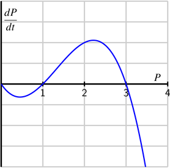

Section7.2Qualitative behavior of solutions to DEs¶ permalink
{In this section, we strive to understand the ideas generated by the following important questions:
- What is a slope field?
- How can we use a slope field to obtain qualitative information
about the solutions of a differential equation?
- What are stable and unstable equilibrium solutions of an
autonomous differential equation?
}
Subsection7.2.1Introduction
In earlier work, we have used the tangent line to the graph of a
function \(f\) at a point \(a\) to approximate the values of \(f\) near \(a\).
The usefulness of this approximation is that we need to know very
little about the function; armed with only the value \(f(a)\) and the
derivative \(f'(a)\), we may find the equation of the tangent line and
the approximation
\[
f(x) \approx f(a) + f'(a)(x-a).
\]
Remember that a first-order differential equation gives us information
about the derivative of an unknown function.
Since the derivative at a point tells us the slope of the
tangent line at this point, a differential equation
gives us crucial information about the tangent lines to the graph of
a solution. We will use this information about the tangent lines to
create a slope field for the differential equation, which enables
us to sketch solutions to initial value problems. Our aim will be to
understand the solutions qualitatively. That is, we would like to
understand the basic nature of solutions, such as their long-range
behavior, without precisely determining the value of a solution at a
particular point.
Preview Activity
Let's consider the initial value problem
\[
\frac{dy}{dt} = t - 2, \ \ y(0) = 1.
\]
- Use the differential equation to find the slope of the tangent
line to the solution \(y(t)\) at \(t=0\). Then use the initial value to
find the equation of the tangent line at \(t=0\). Sketch this tangent
line over the interval \(-0.25\leq t\leq0.25\) on the axes provided.
- Also shown in the given figure are the tangent lines to the solution \(y(t)\) at
the points \(t=1, 2,\) and \(3\) (we will see how to find these later).
Use the graph to measure the slope of each tangent line
and verify that each agrees with the value specified by the differential
equation.
- Using these tangent lines as a guide, sketch a graph of the
solution \(y(t)\) over the interval \(0\leq t\leq 3\) so that the lines
are tangent to the graph of \(y(t)\).
- Use the Fundamental Theorem of Calculus to find \(y(t)\), the
solution to this initial value problem.
- Graph the solution you found in (d) on the axes provided, and compare it to the sketch
you made using the tangent lines.
Subsection7.2.2Slope fields
\knownindex{\lt main>slope field\lt /main>}
Preview Activity shows that we may sketch the solution to an initial
value problem if we know an appropriate collection of tangent lines. Because we may use a given differential equation to determine the slope of the tangent
line at any point of interest, by plotting a useful collection of these, we can get an accurate sense of how certain solution curves must behave.
Let's continue looking at the differential equation \(
\ds \frac{dy}{dt} = t-2.
\)
If \(t=0\), this equation says that \(dy/dt = 0-2=-2\). Note that this value holds regardless of the value of \(y\). We will therefore
sketch tangent lines for several values of \(y\) and \(t=0\) with a slope
of \(-2\).
Let's continue in the same way: if \(t=1\), the differential equation
tells us that \(dy/dt = 1-2=-1\), and this holds regardless of the value of \(y\). We now sketch tangent lines for
several values of \(y\) and \(t=1\) with a slope of \(-1\).
Similarly, we see that when \(t=2\), \(dy/dt = 0\) and when \(t=3\),
\(dy/dt=1\). We may therefore add to our growing collection of tangent line plots to achieve the next figure.
In this figure, you may see the solutions to the differential
equation emerge. However, for the sake of clarity, we will
add more tangent lines to provide the more complete picture shown below.
This most recent figure, which is called a slope field\knownindex{\lt main>slope field\lt /main>} for the differential
equation, allows us to sketch
solutions just as we did in the preview activity. Here, we will begin with the
initial value \(y(0) = 1\) and start sketching the solution by following
the tangent line, as shown in the next figure.

We then continue using this principle: whenever the solution passes
through a point at which a tangent line is drawn, that line is tangent
to the solution. Doing so leads us to the following sequence of images.
In fact, we may draw solutions for any possible initial value, and doing this for several different initial values for \(y(0)\) results in the graphs shown next.

Just as we have done for the most recent example with \(\frac{dy}{dt} = t-2\), we can construct a slope field for any differential equation of interest. The slope field provides us with visual information about how we expect solutions to the differential equation to behave.
Consider the autonomous differential equation
\[
\frac{dy}{dt} = -\frac 12( y - 4).
\]
- Make a plot of \(\frac{dy}{dt}\) versus \(y\) on the axes provided. Looking at the
graph, for what values of \(y\) does \(y\) increase and for what values of \(y\)
does \(y\) decrease?
- Next, sketch the slope field for this differential equation on the axes provided.
- Use your work in (b) to sketch the solutions that satisfy \(y(0) = 0\), \(y(0) = 2\), \(y(0) = 4\)
and \(y(0) = 6.\)
- Verify that \(y(t) = 4 + 2e^{-t/2}\) is a solution to the given
differential equation with the initial value \(y(0) = 6.\) Compare
its graph to the one you sketched in (c).
- What is special about the solution where \(y(0) = 4\)?
Hint- Small hints for each of the prompts above.
Hint- Big hints for each of the prompts above.
Solution- Solutions for each of the prompts above.
Subsection7.2.3Equilibrium solutions and stability
As our work in Activity 7.2.1 demonstrates, first-order autonomous
solutions may have solutions that are constant. In fact, these are
quite easy to detect by inspecting the differential equation \(dy/dt =
f(y)\): constant solutions necessarily have a zero derivative so
\(dy/dt = 0 = f(y)\).
For example, in Activity 7.2.1, we considered the
equation
\[
\frac{dy}{dt} = f(y)=-\frac12(y-4).
\]
Constant solutions are found by setting \(f(y) = -\frac12(y-4) = 0\),
which we immediately see implies that \(y = 4\).
Values of \(y\) for which \(f(y) = 0\) in an autonomous differential equation \(\frac{dy}{dt} = f(y)\) are usually called or equilibrium solutions \knownindex{\lt main>equilibrium solution\lt /main>} of the differential
equation.
Consider the autonomous differential equation
\[
\frac{dy}{dt} = -\frac 12 y(y-4).
\]
- Make a plot of \(\frac{dy}{dt}\) versus \(y\). Looking at the
graph, for what values of \(y\) does \(y\) increase and for what values of \(y\)
does \(y\) decrease?
- Identify any equilibrium solutions of the given differential equation.
- Now sketch the slope field for the given differential equation.
- Sketch the solutions to the given differential equation that correspond to initial values \(y(0)=-1, 0, 1, \ldots, 5\).
- An equilibrium solution \(\overline{y}\) is called stable \knownindex{\lt main>stable\lt /main>} \knownindex{\lt main>equilibrium solution\lt /main>\lt sub>stable\lt /sub>}
if nearby
solutions converge to \(\overline{y}\). This means that if the inital
condition varies slightly from \(\overline{y}\), then
\(\lim_{t\to\infty}y(t) = \overline{y}\).
Conversely, an equilibrium solution \(\overline{y}\)
is called unstable \knownindex{\lt main>unstable\lt /main>} \knownindex{\lt main>equilibrium solution\lt /main>\lt sub>unstable\lt /sub>} if nearby solutions are pushed away from
\(\overline{y}\).
Using your work above, classify the equilibrium solutions you found in (b)
as either stable or unstable.
- Suppose that \(y(t)\) describes the population of a species of
living organisms and that the initial value \(y(0)\) is positive. What can you
say about the eventual fate of this population?
- Remember that an equilibrium solution \(\overline{y}\) satisfies
\(f(\overline{y}) = 0\). If we graph \(dy/dt = f(y)\) as a function of
\(y\), for which of the following differential equations is
\(\overline{y}\) a stable equilibrium and for which is \(\overline{y}\) unstable? Why?
\qquad
Hint- Small hints for each of the prompts above.
Hint- Big hints for each of the prompts above.
Solution- Solutions for each of the prompts above.
\item A slope field is a plot created by graphing the tangent lines of
many different solutions to a differential equation.
\item Once we have a slope field, we may sketch the graph of solutions
by drawing a curve that is always tangent to the lines in the slope
field.
\item Autonomous differential equations sometimes have constant
solutions that we call
equilibrium solutions. These may be classified as stable or
unstable, depending on the behavior of nearby solutions.
\hrulefill
\begin{exercises}
\item Consider the differential equation
\[
\frac{dy}{dt} = t-y.
\]
- Sketch a slope field on the plot below:
- Sketch the solutions whose initial values are \(y(0)= -4, -3, \ldots, 4\).
- What do your sketches suggest is the solution whose initial
value is \(y(0) = -1\)? Verify that this is indeed the solution to
this initial value problem.
- By considering the differential equation and the graphs you
have sketched, what is the relationship between \(t\) and \(y\) at a
point where a solution has a local minimum?
\item Consider the situation from problem 2 of Section 7.1: Suppose
that the population of a particular species is
described by the function \(P(t)\), where \(P\) is expressed in
millions. Suppose further that the population's rate of change is
governed by the differential equation
\[
\frac{dP}{dt} = f(P)
\]
where \(f(P)\) is the function graphed below.

- Sketch a slope field for this differential equation. You do
not have enough information to determine the actual slopes, but
you should have enough information to determine where slopes are positive, negative, zero, large, or small, and hence determine the qualitative
behavior of solutions.
- Sketch some solutions to this differential equation when the
initial population \(P(0)>0\).
- Identify any equilibrium solutions to the differential equation and classify them as stable
or unstable.
- If \(P(0)>1\), what is the eventual fate of the species?
- if \(P(0)\lt 1\), what is the eventual fate of the species?
- Remember that we referred to this model for population growth
as “growth with a threshold.” Explain why this characterization makes sense by considering
solutions whose inital value is close to 1.
\item The population of a species of fish in a lake is \(P(t)\) where
\(P\) is measured in thousands of fish and \(t\) is measured in
months. The growth of the population is described by the
differential equation
\[
\frac{dP}{dt} = f(P) = P(6-P).
\]
- Sketch a graph of \(f(P) = P(6-P)\) and use it to determine the
equilibrium solutions and whether they are stable or unstable.
Write a complete sentence that describes the long-term behavior of
the fish population.
- Suppose now that the owners of the lake allow fishers to
remove 1000 fish from the lake every month (remember that \(P(t)\)
is measured in thousands of fish). Modify the differential
equation to take this into account. Sketch the new graph of
\(dP/dt\) versus \(P\). Determine the new equilibrium solutions and
decide whether they are stable or unstable.
- Given the situation in part (b), give a description of
the long-term behavior of the fish population.
- Suppose that fishermen remove \(h\) thousand fish per month.
How is the differential equation modified?
- What is the largest
number of fish that can be removed per month without eliminating the fish
population? If fish are removed at this maximum rate, what is the
eventual population of fish?
\item Let \(y(t)\) be the number of thousands of mice that live on a
farm; assume time \(t\) is measured in years. 1
- The population of the mice grows at a yearly rate that is twenty times
the number of mice. Express this as a differential equation.
- At some point, the farmer brings \(C\) cats to the farm. The
number of mice that the cats can eat in a year is
\[
M(y) = C\frac{y}{2+y}
\]
thousand mice per year. Explain how this modifies the
differential equation that you found in part a).
- Sketch a graph of the function \(M(y)\) for a single cat \(C=1\) and
explain its features by looking, for instance, at the behavior of
\(M(y)\) when \(y\) is small and when \(y\) is large.
- Suppose that \(C=1\). Find the equilibrium solutions and
determine whether they are stable or unstable. Use this to
explain the long-term behavior of the mice population depending on
the initial population of the mice.
- Suppose that \(C=20\). Find the equilibrium solutions and
determine whether they are stable or unstable. Use this to
explain the long-term behavior of the mice population depending on
the initial population of the mice.
- What is the largest number of cats for which the mice
population can survive?
\end{exercises}
\afterexercises
\clearpage